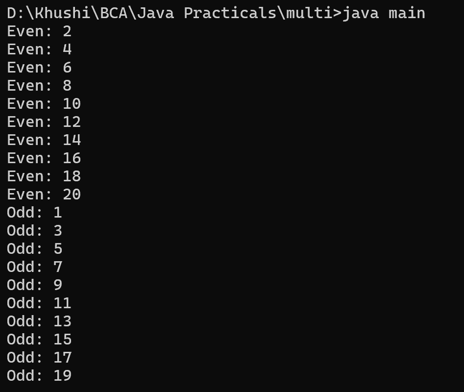

2. Write a Java program that creates two threads to find and print even and odd numbers from 1 to 20.
class main {
public static void main(String[] args) {
Thread evenThread = new Thread() {
public void run() {
for (int i = 2; i <= 20; i += 2) {
System.out.println("Even: " + i);
}
}
};
Thread oddThread = new Thread() {
public void run() {
for (int i = 1; i <= 19; i += 2) {
System.out.println("Odd: " + i);
}
}
};
evenThread.start();
oddThread.start();
}
}
